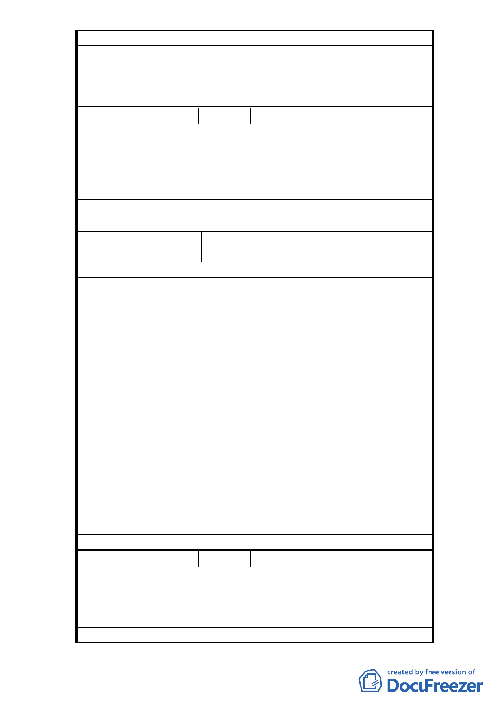

2、天母運動場應由體育處全權負責和管理。
建議辦法
天母體育場用地不宜與大學用地合併規劃。因使用主
體的需求（學生和居民）存有絕對的差異性。
委員會決議
因本案大學用地係屬公共設施用地，依規定不必擬訂
細部計畫，故本案予以退回。
編
號6
陳情人 謝林玲玲
1、監察院已函要求體院建蔽率降至 40％，請依法行事。
陳 情 理 由 2、非台北體院校地，請回歸體育處管理，市民才有能
力監督，因為市民無法要求大學。
建議辦法
體育場用地還是應該歸台北市體育處管理，也才有經
費修理年久失修的運動公園。
委員會決議
因本案大學用地係屬公共設施用地，依規定不必擬訂
細部計畫，故本案予以退回。
編
號
7
陳情人
99.3.11 說明會民眾陳情意見（發
展局綜整）
陳情理由
1、本次都市計畫變更之法源依據為何。
2、本變更案基地範圍為何要將體育場用地納入整體規
劃，請將校園與體育場分開不要影響體育場用地使
用。
3、請說明學校用地目前之現況樓地板面積、容積率、
建蔽率，為何會先蓋完才訂定都市計畫，未來興建
之預估總樓地板面積、容積率、建蔽率為何，並檢
討是否符合相關規定。
建 議 辦 法 4、天母體育場目前已興建完成之建築物色彩、形式造
成對原來體育場用地的視覺衝擊，與市民對體育場
景觀期望不同。
5、有關本計畫睦鄰措施之優惠停車場因變更設計而減
少，是否將造成交通衝擊、是否有替代方案、提供
居民之睦鄰車位要移至何處。
6、有關本計畫睦鄰措施所提停車場出入口 300 公尺範
圍內里民可享全日月票 8 折優惠 1 節，300 公尺之
範圍涵蓋過小。
委 員會決 議 同編號 1。
編
號8
陳情人 李湘臻
北體進駐天母後為本地區帶來活力與學術氣質，其推
陳情理由
廣課程與優秀的師資造福對健康與運動有強烈需求的
天母人，然在北體上課時，場地空間明顯不足，讓原
本提供就近上課的美意留下遺憾。
建 議 辦 法 興建中的場館應如期完工，不但能讓天際線充滿怪手
-6-